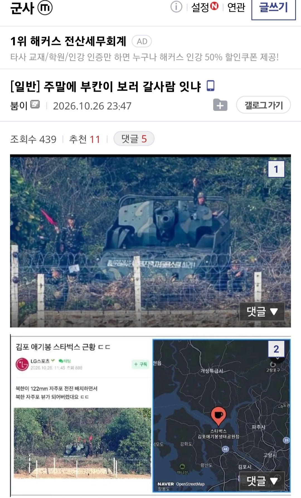
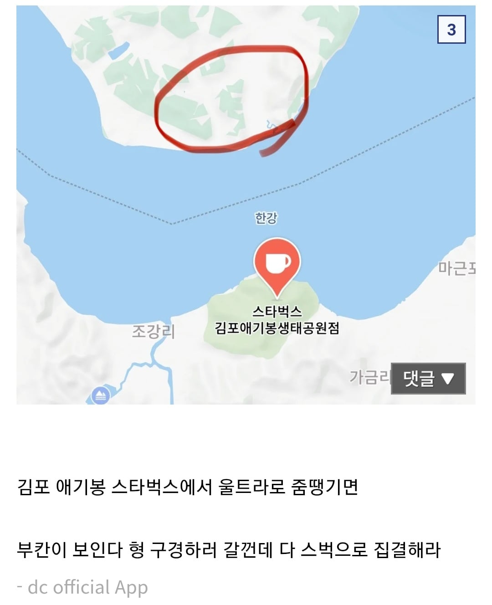

출처 군갤


출처 군갤
자리 남으면 현장 예매도 가능하긴 하던데
단체로 많이와서 빠꾸맞을 가능성이 높더라
자대가서 여러번봄 재들도 똑같더라 총 ak 같은데 땅바닥에 떨궈놓고 담배피고 있던데 ㅋㅋ 한새끼는 풀에 누워서 자고있고
개빠졌네 ㅋㅋ
전방에서 늘 보이는 일상임 헬멧도 안씀
모포뒤집어쓰고다니던데 ㅋㅋㅋㅋ
북한 함보고싶다 하면 양구통일전망대 말고 고성통일전망대 가라
양구는 뭐만하면 다 통제인데 고성은 그냥 프리함 물론 양구가 조금더 실감나긴한데 우리는 고성이 훨 좋았다
고성 통일 전망대가면 금강산 널널하게 볼수있음
ㄹㅇ
애기봉평화생태공원 수요일 무료입장이야 라떼도 사람 널널하더만 지금 가보니 여전히 널널하군 오늘 가도 자리 남음
부칸이 이새끼 왜 안가냐
근데 저새끼들 정조준해놓은건가? 실수로 포땡기면 뒤질까봐 무서워서 어케가냐저런거
그나저나 북한 빨리쳐망했음 좋겠는게
북한 가장위쪽은 시원하던데 여름에 그쪽으로 도망가있고싶음
아니면 철도로 러시아쪽으로 나가있던지 한국여름너무더워
통일되도 2~30년은 전력망 새로 짓느라 에어컨도 못틀거다 아서라 ㅋㅋ
개성자이 vs 평양래미안
웅장한 집값대결 보고싶다
서울가까운 개성자이 압승
에어컨에 필요없잖아
난방은 필요해도 ㅎㅎ
여름에 북한은 안더울거라 생각하는거야..? 오히려 2~3도 더 시원한곳보다
에어컨 빠방한 도시가 더 나을거다
태백 대관령도 안가는 새끼가 뭔 개마고원을 놀러가노?
통일되면 원산이랑 함흥 존나뜰꺼다 여름에 시원해서
안에 포만 안 넣어두면 되지
포탄이 가짜라 안심
통일 되면 서울 부동산은 더 오를지 내릴지 궁금하다.
세로로 딱 정중앙이라 더 오르려나?
서울아파트값은 일종의 난민방벽으로 작동할거임
더 오르겠지
저런데 있는줄도 몰랐는데 집에서 임진각보다 가까워서 함들리기 좋네
갔다 왔다 포탄 한발 스치고 놀래서 다시 나왔다
임마 병력 더불러라 새끼야
오 뭐야. 코스프레임??
11년 전 애기봉 옆옆 소초에서 근무했는데 그당시 지뢰도발로 한창 남북 사이 안좋을때여서 북괴애들이 장갑차 냅두고 하긴했는데 자주포 꺼내놓는건 ㄹㅇ 미친놈들이네
태풍전망대가면 초소 가까이 구경할 수 있음
내가 알기로 전망대중 북한이랑 가장 가까운곳
여기 간다고 바로 들갈 수 있는게 아니라 미리 예매하고 시간에 맞춰서 들가야 하더라 갈 사람들은 참고